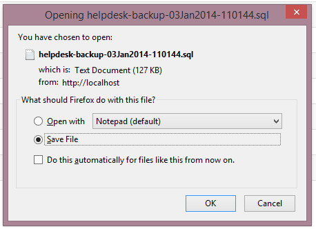
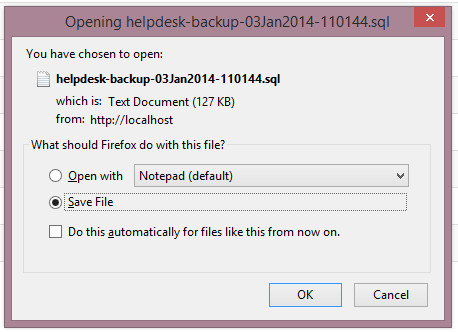

Database Backup
Overview
Enables database schema backup. Please read carefully. Click example images to display full size version in new tab/window.
Screenshot
{kind=link}
Why Do I Need To Backup Database?
The database contains all your critical support data. It is not a part of the web files, so will not be backed up if you download a copy of your support system via
FTP or via your server control panel. Some hosting companies automatically save database backups, but these CANNOT be relied on. If the server crashes and the backup files
are also corrupt, you have lost everything. It is recommended you regularly download a schema backup via your ticket admin area. You can also set up a cron to
auto backup your system and automate the process.
Download to Hard Drive
If checked, will envoke save as dialogue box. Example screenshot in Firefox:

If NOT checked, backup files will be saved to "backups" directory.

If NOT checked, backup files will be saved to "backups" directory.
Compress Backup File (GZ)
If checked, will compress backup file in GZ file. This is recommended for large databases.
Copy as Attachment to E-Mail Address(es)
If you wish to have the backup files emailed as attachments, enter email address(es) separated with a comma.
Restore Database
There is no restore option in Maian Support as one isn`t really needed. You can import your SQL/GZ file via your server control panel.
Auto Backup via Cron Job